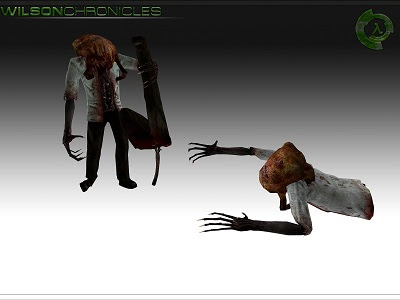

Texturing modeling animation and level design were all okay, but the gameplay was UTTER SHIT. Who the hell decided to make houndeyes stronger than HECU??? Too much focus was placed on shooting explosive barrels, so if you didn’t shoot the barrel, you ended up wasting health and ammo. And there was a whole lot more but I played it a week ago and can’t quite remember what else was horribly wrong.
6 months from the last update and 3 years since the begining of the developpment, here comes a new media for Wilson Chronicles.
We are going to show you the hard work that has done our development team.
Chapter 2
This chapter will place the player in the Black Mesa’s disaster after the Xen invasion.
{kind=link}
{kind=link}
Chapter 3
In this chapter, the player, supported by survivors from the Black Mesa incident, will have to deal with the Xen resistance trough the Black Mesa’s clinic.
{kind=link}
{kind=link}
We’re still needing coders to achieve the small part that needs to be done which include the snarks weapon and NPC.
If you think you can do it, contact us!
{kind=link}
About the weapons, here are a bunch of them which will feature in the mod.
{kind=link}
{kind=link}
{kind=link}
{kind=link}
{kind=link}
{kind=link}
About release date, Wilson Chronicles is still announced for 2012.
The current version of the mod is “Alpha 6”. This version is cleaner than any previous versions including the demo.
If you haven’t played it yet, the demo version of the mod is available here :
Download Wilson Chronicles Demo Release 1.0
The content of this version of Wilson Chronicles may contain bugs. Before installing, please check you’ve “Source SDK Base 2007” installed on your computer. If you don’t have it, please install it.
“Source SDK Base 2007” can be found in “Tools” in the library tab.
This demo includes 2 maps which take place at the 2/4 of the game.About the official website, it is currently under development and will be back online soon.
Don’t forget, Frequently Asked Questions (FAQ) is available here in english or here for French community.
The development Team also welcome 2 new sounders: Glen and Charly.
Actual Team :
* Frere D’Arme - Leader / Level Designer / 2D Artist / 3D Artist / Programmer
* Eaglesg - 2D Artist / Game Designer / 3D Artist
* Al.bundy - Level Designer / 2D Artist
* Gto47 - 3D Artist
* Laurent Augendre - 3D Artist
* Aurelien Vaillant- 3D Artist
* Glen Grant - Sound Designer
* Charly Jouglet - Sound Designer
* Jared West - Level Designer
Past Team :
* Raph - 3D Artist / Programmer
* Richard Rohac - Programmer
We are looking for :
•3D Artists
•2D Artists
•Animators
•Programmers
Don’t forget to join the community group of the mod and stay tuned for next Media Release !
Today is a special day because it’s the beginning of the Moddb MOTY which will tell us which mod is the more waited !
During the next days we’ll post a lot of little news giving you brand new content like leveldesign screenshots, models rendering and all kind of cool stuff. Lets start first with this news showing you one map screenshot and two weapon models rendering :
{kind=link}
{kind=link}
Chapter 1
This first chapter will place the player in the discovery of the Black Mesa Research center in a quite actioned pack way.
{kind=link}
Thank you for all your support, hoping you guys can help us to get in the top 100 of this MOTY just like past year !
Keep following us here on Moddb for the next days news.

As most of you will know, the voting for this year’s Mod of the Year awards started today. The MotY awards are fairly prestigious within the modding community.
We are looking for :
•3D Artists
•2D Artists
•Animators
•Programmers
Don’t forget to join the community group and the facebook group of the mod and stay tuned for next Media Release !
As we said 3 days before, we’ll release a few news with some new content of our eleventh media release, here is the second one, we’re giving you 4 mapping screens today showing you the Introduction chapter and the Medical Center chapter :
Introduction
Darren Wilson prepares himself to go to work in Black Mesa as an usual day, he takes his car and drives trought the desert of New Mexico.
{kind=link}
{kind=link}
Chapter 3
In this chapter, the player, supported by survivors from the Black Mesa incident, will have to deal with the Xen resistance trough the Black Mesa’s clinic.
{kind=link}
{kind=link}
Thank you for all your support ! Remember, you still can help us to get in the top 100 of this MOTY just like past year !
Keep following us here on Moddb for the next days news.
As most of you will know, the voting for this year’s Mod of the Year awards started on past wednesday. The MotY awards are fairly prestigious within the modding community.
We are looking for :
•3D Artists
•2D Artists
•Animators
•Programmers
Don’t forget to join the community group and the facebook group of the mod and stay tuned for next Media Release !
beeoootifull
Sup, brodog.
What?
It’s us, again ! We’re comming in with this last news for the MOTY Media Release :
Chapter 3
In this chapter, the player, supported by survivors from the Black Mesa incident, will have to deal with the Xen resistance trough the Black Mesa’s clinic.
{kind=link}
{kind=link}
{kind=link}
Thank you for all your support ! Remember, you still can help us to get in the top 100 of this MOTY just like past year !
Keep following us here on Moddb for the next days news.
As most of you will know, the voting for this year’s Mod of the Year awards started on past wednesday. The MotY awards are fairly prestigious within the modding community.
We are looking for :
•3D Artists
•2D Artists
•Animators
•Programmers
Don’t forget to join the community group and the facebook group of the mod and stay tuned for next Media Release !
Nice  Already voted for moty.
Already voted for moty.
I have to agree. When starting the game faced against houndeyes and you empty your pistol on them and nothing happens then there’s a serious problem. I never knew that using a fist was more powerful than a pistol. (I frickin hate games that utilize fists and punches) [/SIZE]. I quit playing at that point. You lost me within the first 90 seconds of the game.
[align=center][/align]
As you know it is Christmas so, we decided to give you an updated version of the demo released in summer 2010 (almost one year and a half ago !) which contains these changes :
[align=center]
[/align]
We know it is not an huge update for Christmas but, we are in some difficulties right now and will need a really big help to finish the mod and release it in april, so unfortunately we decided to push the release date to Christmas 2012, we’re doing all we can to release it as soon as possible but, some team members are quiting and others dissapearing which won’t help to finish this mod. We really need some help with modeling and programming ! So if you can help us or if you know someone who can help us, please contact us on facebook or by mail.
{kind=link}
{kind=link}
{kind=link}
{kind=link}
Thank you for all your support, we still in the top 100 of the MOTY this year, votes are closed anyway.
[align=center]Download Wilson Chronicles Demo Release 2
Download Wilson Chronicles Demo Release 2 (Alternative Link)[/align]
The content of this version 2 of Wilson Chronicles may contain bugs. Before installing, please check you’ve “Source SDK Base 2007” installed on your computer. If you don’t have it, please install it.
“Source SDK Base 2007” can be found in “Tools” in the library tab.
If you’ve any question, please send us on Moddb.
Merry Christmas and have a nice holiday time for those who have !
Don’t forget to join the community group and the facebook group of the mod and stay tuned for next Media Release !
It looks awesome, wtf I never heard of WILSONCHRONICLES. why dont you guys join your forces together and help finish bms?!
this was actually the first time that i saw half-life 1 related stuff in a source mod . im impressed . keep up the good work
[align=center][/align]
Hi everyone ! Today it’s been 4 years that we are working on Wilson Chronciles. We’d really like to thank every people who is following us since the first steps of the development and those who just came. We also wanted to thank all the guys who are in the development team right now, working on the mod but also those who has passed a few times in the team and are gone for some reasons.
We are really proud to annonce you that the development of the mod is going faster and faster. You probably remember that the mod was supposed to be released in april 2012, date where we actually are, but for some reasons, we had to push it to the end of the year 2012, temporary date, which will be confirmed or pushed again if we have to. We are estimating to 60% the state of the mod development, the maps are getting builded and the models and scripts database is growing up.
Two versions of the demo of the mod have been published, the second version is a enhanced version of the first one, you should try it as soon as possible if you did not !
[align=center]Download Wilson Chronicles Demo Release 2[/align]
The content of this version 2 of Wilson Chronicles may contain bugs. Before installing, please check you’ve “Source SDK Base 2007” installed on your computer. If you don’t have it, please install it.
“Source SDK Base 2007” can be found in “Tools” in the library tab.
[align=center][/align]
{kind=link}
We are still looking for people to help us with the project especially with modeling and programming.
Thanks again to every people following us, we’re hoping that we’ll be able to release the mod before 2013, probably near Christmas 2012, just expecting that the end of the world won’t waste everything up !
Don’t forget to join the community group and the facebook group of the mod and stay tuned for next Media Release !
Neat! 1st demo was pretty fun, I’m downloading this one now.